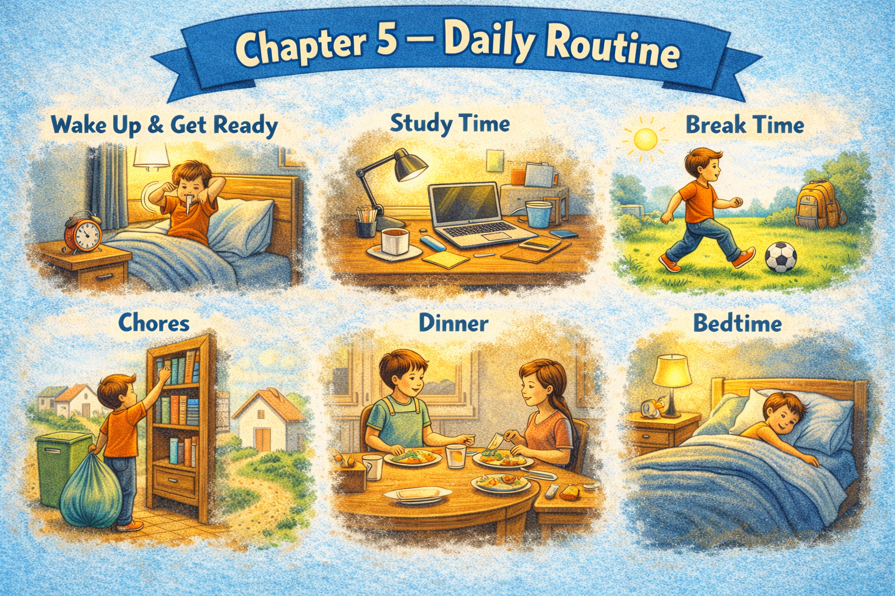

Chapter 5 — Daily Routine

Micro Scene 1 — Waking Up and Starting the Day
1️⃣ Scene Text
I usually wake up around seven in the morning.
The first thing I do is check my phone without fully getting out of bed.
Light enters the room gradually as the curtains let it through.
I sit up slowly and take a moment to adjust to the day.
Sometimes I feel alert immediately; other times I remain half awake.
After a few minutes, I stand up and walk toward the desk.
The room feels quiet before any devices are turned on.
I open the laptop and wait for the screen to light up.
The system takes a few seconds to respond.
By the time everything is running, I am fully awake.
The day begins not with a single action, but with a sequence.
2️⃣ Core Verb Pool
wake up
check
enter
sit up
adjust
feel
remain
stand up
walk
turn on
wait
respond
begin
3️⃣ Structure Patterns
I usually + verb
The first thing I do is + verb
Sometimes X; other times Y
After + time expression
By the time + clause
X begins with + noun
X takes + time
4️⃣ Replace & Extend
Replace the time:
I usually wake up at seven.
→ I usually wake up before sunrise.
→ I usually wake up later on weekends.
Replace the sequence:
The first thing I do is check my phone.
→ The first thing I do is make coffee.
→ The first thing I do is open the window.
Replace the state:
Sometimes I feel alert.
→ Sometimes I feel tired.
→ Sometimes I feel distracted.
5️⃣ Spoken Mode
I usually wake up around seven.
First thing I do is check my phone.
Sometimes I’m alert right away; sometimes I’m still half asleep.
After a few minutes, I get up and start the laptop.
That’s how my day begins.
🔎 Structural Notes
• “The first thing I do is…” defines habitual sequence.
• “By the time…” signals completion relative to another event.
• “Sometimes… other times…” balances variation.
Micro Scene 2 — Settling into Work
1️⃣ Scene Text
Once the laptop is running, I begin by reviewing unfinished tasks.
I open several tabs and scan through notes from the previous day.
At first, my attention moves quickly from one window to another.
Gradually, I narrow my focus to a single task.
I adjust the position of the screens to reduce distraction.
Sometimes I reorganize the desk before I start working seriously.
If something feels unclear, I take a moment to clarify the objective.
The transition from preparation to execution is subtle.
After about twenty minutes, I settle into a steady rhythm.
The environment becomes less noticeable as concentration increases.
Work does not start instantly; it builds through small adjustments.
2️⃣ Core Verb Pool
begin
review
open
scan
move
narrow
adjust
reorganize
start
clarify
settle
increase
build
3️⃣ Structure Patterns
Once X + verb, Y + verb
At first, X; gradually, Y
I begin by + verb-ing
If X + verb, Y + verb
After + time expression
X becomes + adjective
X builds through + noun
4️⃣ Replace & Extend
Replace the focus:
Gradually, I narrow my focus.
→ Gradually, I lose focus.
→ Gradually, I gain momentum.
Replace the preparation:
I begin by reviewing unfinished tasks.
→ I begin by planning the day.
→ I begin by answering emails.
Replace the rhythm:
I settle into a steady rhythm.
→ I struggle to find a rhythm.
→ I maintain a consistent pace.
5️⃣ Spoken Mode
Once the laptop’s on, I check what I left unfinished.
At first I jump between tabs.
Then I focus on one thing.
After a while, I get into a rhythm.
It doesn’t happen instantly — it builds up.
🔎 Structural Notes
• “Once…” marks immediate sequence.
• “At first… gradually…” shows progression.
• “begin by + verb-ing” expresses structured initiation.
Micro Scene 3 — Interruptions and Distractions
1️⃣ Scene Text
While I am working, notifications occasionally appear on the screen.
A message pops up in the corner and briefly interrupts my focus.
Sometimes I ignore it and continue typing.
Other times, I pause and check what it says.
The phone vibrates unexpectedly, pulling my attention away from the task.
If I respond immediately, the original flow breaks.
It often takes several minutes to regain concentration.
Distractions do not always last long, but they reset the mental rhythm.
Even small interruptions create a shift in priority.
I try to minimize unnecessary input during focused sessions.
Managing distraction is part of the daily routine.
2️⃣ Core Verb Pool
work
appear
pop up
interrupt
ignore
pause
check
vibrate
respond
break
regain
reset
shift
minimize
manage
3️⃣ Structure Patterns
While X + verb, Y + verb
Sometimes X; other times Y
If X + verb, Y + verb
It takes + time + to + verb
Even + small noun + can + verb
X is part of + noun
4️⃣ Replace & Extend
Replace the interruption:
A notification interrupts my focus.
→ A phone call interrupts the session.
→ A system update interrupts the process.
Replace the reaction:
I ignore it and continue working.
→ I respond immediately.
→ I postpone it for later.
Replace the effect:
It takes several minutes to regain focus.
→ It takes effort to stay focused.
→ It takes discipline to ignore distractions.
5️⃣ Spoken Mode
Notifications pop up while I’m working.
Sometimes I ignore them; sometimes I check.
If I respond right away, I lose my flow.
It takes a while to focus again.
Handling distractions is part of the routine.
🔎 Structural Notes
• “While…” expresses simultaneous action.
• “It takes + time + to…” quantifies effort.
• “regain + noun” implies recovery of state.
Micro Scene 4 — Breaks and Transitions
1️⃣ Scene Text
After working for an extended period, I usually take a short break.
I stand up and step away from the desk to reset my focus.
Sometimes I walk around the room to stretch my legs.
The transition from intense concentration to brief relaxation feels necessary.
If I stay seated for too long, my energy begins to drop.
A short pause restores clarity and reduces mental fatigue.
I often check the time before returning to work.
The shift back to the desk requires a deliberate effort.
Gradually, I rebuild momentum and reenter the task.
Breaks divide the day into manageable segments.
Without them, productivity becomes unstable.
2️⃣ Core Verb Pool
take
stand up
step away
walk
stretch
reset
stay
drop
restore
reduce
check
return
rebuild
reenter
divide
become
3️⃣ Structure Patterns
After + verb-ing
If X + verb, Y + verb
A short + noun + verb-s
X requires + noun
Without X, Y + would + verb
X divides + noun into + noun
4️⃣ Replace & Extend
Replace the duration:
After working for an extended period…
→ After focusing for an hour…
→ After finishing a task…
Replace the effect:
A short break restores clarity.
→ A short walk restores energy.
→ A pause reduces stress.
Replace the consequence:
Without breaks, productivity becomes unstable.
→ Without rest, focus declines.
→ Without structure, time feels chaotic.
5️⃣ Spoken Mode
After a while, I take a break.
If I sit too long, my energy drops.
A short pause helps me reset.
Then I come back and get into it again.
Breaks keep the day manageable.
🔎 Structural Notes
• “After + verb-ing” marks completed action before transition.
• “Without X, Y would…” expresses conditional dependency.
• “reenter” signals return to prior state.
Micro Scene 5 — Ending the Work Session
1️⃣ Scene Text
As the day progresses, my pace gradually slows down.
I begin to review what I have completed and what remains unfinished.
Before shutting down the laptop, I save all active documents.
I close unnecessary tabs and clear temporary files.
Sometimes I make a brief note outlining the next steps for tomorrow.
The final minutes of the session feel more reflective than productive.
If something is incomplete, I decide whether to continue or postpone it.
Turning off the screen signals the end of active work.
The room becomes quieter once the devices power down.
I push the chair back slightly and step away from the desk.
Ending the session creates a boundary between work and rest.
2️⃣ Core Verb Pool
progress
slow down
review
remain
save
close
clear
outline
decide
continue
postpone
signal
power down
step away
create
3️⃣ Structure Patterns
As X + verb, Y + verb
Before + verb-ing
I begin to + verb
If X + verb, Y + verb
X signals + noun
Once X + verb, Y + verb
X creates a boundary between A and B
4️⃣ Replace & Extend
Replace the closure:
Before shutting down the laptop…
→ Before leaving the room…
→ Before finishing the day…
Replace the reflection:
The final minutes feel reflective.
→ The final minutes feel rushed.
→ The final minutes feel calm.
Replace the boundary:
Ending the session creates a boundary.
→ Logging off creates distance.
→ Closing the laptop creates separation.
5️⃣ Spoken Mode
As the day goes on, I slow down a bit.
Before I shut the laptop, I save everything.
Sometimes I jot down what to do tomorrow.
Turning off the screen means I’m done.
It separates work from the rest of the day.
🔎 Structural Notes
• “As…” signals gradual simultaneous change.
• “Before + verb-ing” marks preparatory action.
• “create a boundary between…” expresses conceptual separation.
Micro Scene 6 — Habit and Variation
1️⃣ Scene Text
Although my routine follows a general structure, it rarely unfolds in exactly the same way.
Some days begin earlier than expected.
Other days start slowly and require more adjustment.
I usually follow the same sequence of actions, but small variations occur naturally.
Sometimes I begin with the most difficult task.
At other times, I start with something simple to build momentum.
Unexpected events occasionally interrupt the planned order.
When that happens, I adapt rather than resist.
Habit provides stability, but flexibility allows progress.
Patterns repeat, yet they never remain completely identical.
Daily routine is structured, but not rigid.
2️⃣ Core Verb Pool
follow
unfold
begin
require
occur
start
interrupt
adapt
resist
provide
allow
repeat
remain
3️⃣ Structure Patterns
Although X + verb, Y + verb
Some days… Other days…
I usually + verb, but + clause
Sometimes… At other times…
When X + verb, Y + verb
X provides + noun
X allows + noun
4️⃣ Replace & Extend
Replace variation:
Some days begin earlier.
→ Some days feel productive.
→ Some days feel slower.
Replace reaction:
When that happens, I adapt.
→ When that happens, I reorganize.
→ When that happens, I postpone tasks.
Replace structure:
Routine is structured, but not rigid.
→ The system is stable, but adaptable.
→ The schedule is organized, but flexible.
5️⃣ Spoken Mode
My routine’s pretty consistent, but it’s never exactly the same.
Some days start early; others take time.
Sometimes I tackle the hardest task first.
If things change, I adjust.
It’s structured, but not rigid.
🔎 Structural Notes
• “Although…” introduces contrast.
• “Some days… Other days…” expresses patterned variation.
• “structured, but not rigid” contrasts stability with flexibility.
🔸 Integration Scene — The Structure of a Day
A typical day begins with small, repeated actions.
I wake up, check my phone, and start the laptop.
At first, focus shifts between tasks.
Gradually, attention narrows into a steady rhythm.
Notifications appear and sometimes interrupt the flow.
Short breaks divide the work into manageable segments.
Energy rises and falls throughout the day.
As time passes, momentum builds and then slows.
Tasks are completed, reviewed, or postponed.
The final minutes become reflective rather than active.
The laptop shuts down, and the room grows quiet.
Routine provides a framework for productivity.
Variation introduces flexibility within that framework.
Each day repeats a structure, but never exactly the same way.
The routine is stable, yet responsive to change.
Integration Verb Focus
begin
shift
narrow
interrupt
divide
rise
slow
complete
postpone
repeat
respond
Reflection
Which part of your routine feels automatic?
Which part requires conscious effort?
Where do interruptions usually occur?